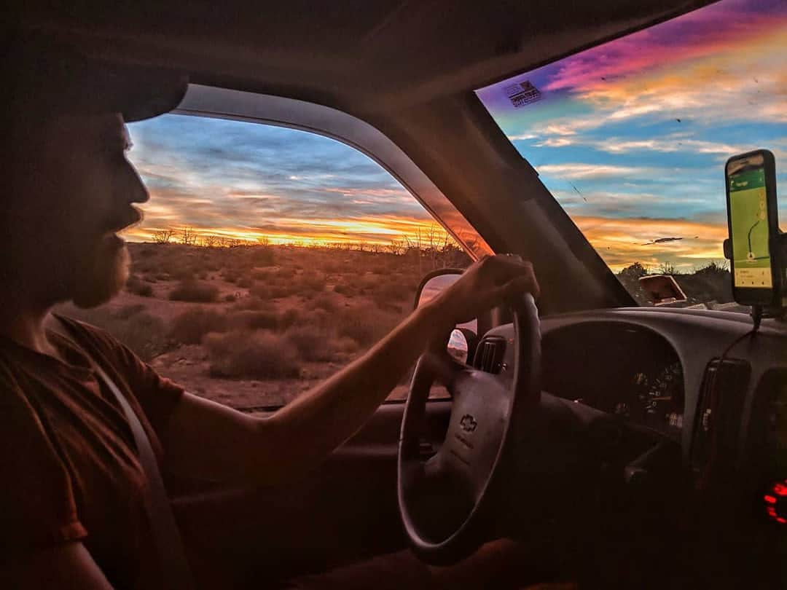
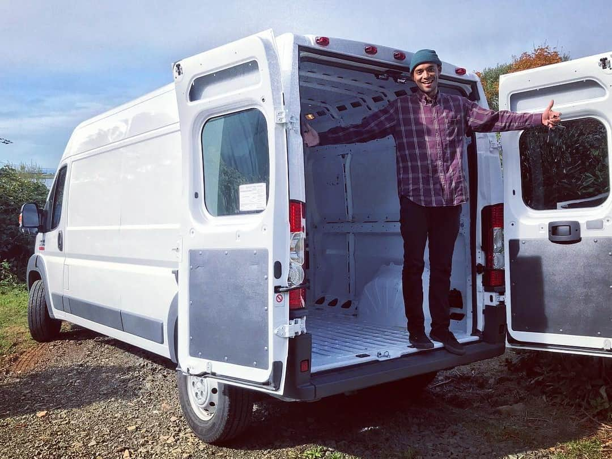
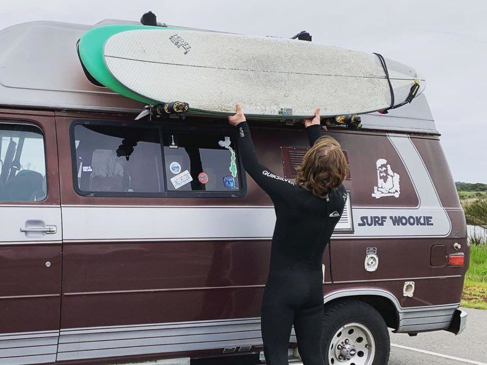

How to vanlife?
You’ve seen the hype around #vanlife. You’ve seen the stunning photos on social media. Now you want to throw everything to the wind, quit your job, and live a carefree life of traveling in a van.
If you’re prepared and have the right mindset, van life can be a great way to cut your expenses, see the world, learn about yourself, and refocus on what really matters in your life. But there are a few things to think about before you make the leap.
This page is designed as a jumping-off point for your personal vanlife journey. We go over the pros and cons of this lifestyle, exactly how to live in a van, some of the reasons why van life is awesome, and some of the drawbacks. We answer the most frequently asked questions about living in a van – everything from bathrooms and showering, to making money on the road, to finding sweet camping spots.
We also include links to more in-depth resources if you want to delve more deeply into a question. So go ahead – explore this page and decide if living in a van is right for you. Then get out there and begin your journey!